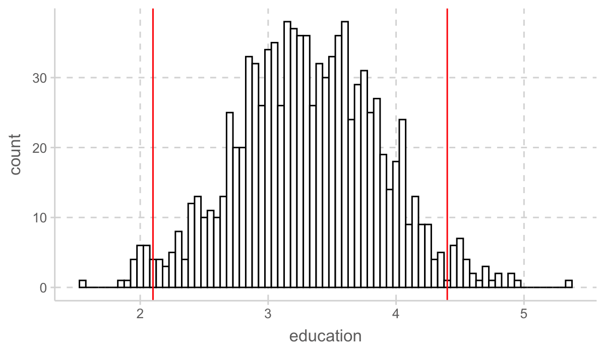
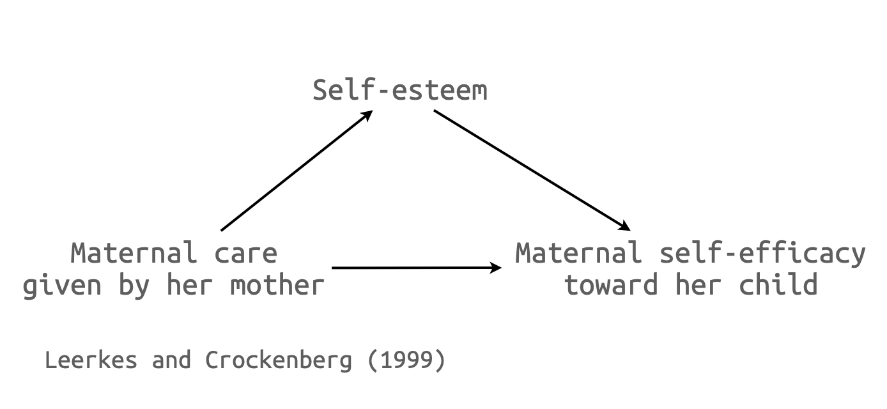

Statistical Inference
Applied Multiple Regression/Correlation Analysis for the Behavioral by Jacob Cohen, Patricia Cohen, Stephen G. West, Leona S. AikenSciences
Confidence Interval
평균이 \(\mu\) 이고 분산이 \(\sigma^2\) 인 모집단으로부터 추출된 표본 사이즈가 \(n\) (size=\(n\))인 표본들에 대해서

Source: The Truthful Art by Albert Cairo.
표본 평균들 \(\bar{X}\) 의 분포를 평균의 표본 분포, the sampling distribution of the mean 이라고 하고, 이 분포는 the central limit theorem에 의해
평균: \(\displaystyle E(\bar{X})=\frac{m_1+m_2+m_3+\cdots+m_w}{w}\Bigg|_{w\rightarrow\infty}\rightarrow ~~~\mu\) ; unbiased estimator (mean or regression coefficient vs. R)
분산: \(\displaystyle V(\bar{X})\Bigg|_{w\rightarrow\infty}\rightarrow ~~~\frac{\sigma^2}{n},\) 표준 편차 \(\displaystyle\frac{\sigma}{\sqrt{n}}\) 를 standard error of estimate (SE)라고 함.
- 이 standard error of estimate는 다시 말하면, 어떤 통계치(여기서는 평균)가 표본들 간에 얼마나 차이가 나는지를 알 수 있는 중요한 지표가 됨.
분포: 모집단의 분포가 normal에 가까울 수록, 또는 표본 크기가 클수록 ( \(n\rightarrow\infty, n > 30\) ) \(\displaystyle\{m_1, m_2, m_3, \cdots, m_w, \cdots\} \sim N(\mu, \frac{\sigma}{\sqrt{n}}) : normal ~ distribution\) (정규 분포)
값을 정규화하면; \(\displaystyle Z=\frac{X-\mu}{\frac{\sigma}{\sqrt{n}}}\)
분포: \(\displaystyle\{z_1, z_2, z_3, \cdots, z_w, \cdots\} \sim N(0, 1) : standard ~ normal ~ distribution\) (표준 정균 분포)
실제 예를 통해서 살펴보면,
예를 들어 어느 섬에 사는 민족의 남성 평균 키가 아래와 같은 분포를 가진다고 할 때 (평균: 173cm, 표준편차: 5cm),
관찰한 100명의 한 표본에서 남성들의 키가 평균 174cm로 관찰되었다면 이 정도로 큰 값이 나올 가능성은 얼마정도 인가?
The Sampling Distribution of the Mean
(b)의 경우 즉, 표본 사이즈가 n = 100인 경우처럼 평균의 표본 분포는 빠르게 정규 분포에 다가가므로 근사적으로 정규 분포의 값을 이용해 그 확률 값을 쉽게 구할 수 있음.
특히, 값들을 정규화하여 표준정규분포 (평균 0, 표준편차 1)의 값을 이용함.
\(\displaystyle \frac{174 - 173}{0.5} = 2, ~~ \bar{Z}=\frac{\bar{X}-\mu}{\frac{\sigma}{\sqrt{n}}}\)
음영된 부분은 대략 2.3%이고, 따라서 100명을 관찰한 표본의 평균 키가 174cm이상이 될 가능성은 2.3%에 밖에 되지 않음. 예를 들어, 1000번 같은 연구를 반복하면 23번 정도는 174cm 이상의 평균 키를 관찰할 수 있을 것임.
실제 성취하고자 하는 유용한 분석은 위 과정의 반대인, 관찰한 특정 표본으로부터 모집단에 대해 추론하는 것임.
이를 통계적 추론, statistical inference라고 함.
가령, 어느 섬에 사는 민족으로부터 관찰된 100명의 키의 평균이 175cm이고 표준편차가 10cm인 경우, 이 민족의 키의 평균은 얼마 정도라고 파악할 수 있는가?
- 먼저, 모집단의 평균 \(\mu\) 를 가정하는데, 가령 \(\mu = 173\) 라면, 우리가 관찰한 표본의 평균 175는 충분히 나올 수 있는 값인가? 이에 대해서는 위의 논리에 따라 구할 수 있음. 즉,
- \(\displaystyle \frac{175 - 173}{\frac{\sigma}{10}} = ~?, ~~ \bar{Z}=\frac{\bar{X}-\mu}{\frac{\sigma}{\sqrt{n}}}\)
- 만약, 모집단의 표준편차 \(\sigma\) 가 예전처럼 5라면, \(\bar{Z} = 4\) 가 되어 매우 희박한 경우가 될 것임. (실제로 0.0032%)
- 모집단의 표준편차를 알 수 없기 때문에 차선책으로, 관찰한 표본의 표준편차를 대체해서 전개함
- 이 경우, 표본의 표준편차가 10이기 때문에, \(\bar{Z} = 2\) 가 되어 2.3% 정도의 가능성이 있다고 볼 수 있으나,
- 표준편차의 대체로 인해 생기는 문제를 보완할 수 있는데, 사실 표본분포가 정규분포가 아닌 Student’s t-분포를 따르고, 이를 이용해서 확률값을 구함.
- 이 경우는 \(\displaystyle t = \frac{\bar{X}-\mu}{\frac{s}{\sqrt{n}}} = 2, ~ (s: the ~sample ~sd)\) 로 t-분포에 의하면 2.4% 정도의 가능성이 있다고 봄
- t-분포는 자유도(degree of freedom)에 의해 분포가 바뀌는데 df는 n-1 (n: 표본 크기)
- 이제 위의 과정을 계속 반복한다고 상상하면, 즉 모집단의 평균을 다른 값으로 가정하면서,
- 관찰된 표본 평균 175cm가 95% (양 극단 2.5%를 제외한) 이내에서 관찰될 수 있는 모집단의 평균들을 모두 찾을 수 있음
- 이 평균들의 범위를 95% confidence interval 이라고 부르고,
- 식으로 전개하면, \(\displaystyle\Bigg| \frac{m-\mu}{\frac{s}{\sqrt{n}}} \Bigg| < 1.66, ~(n=100)\)
\(\displaystyle m-1.66\frac{s}{\sqrt{n}} < \mu < m + 1.66\frac{s}{\sqrt{n}}\) - 위 예의 경우 \(\displaystyle 173.34 < \mu < 176.66\)
- 즉, 우리는 95%의 확신을 갖고, 이 섬에 사는 민족의 평균 키는 173.34cm에서 176.66cm 사이에 있을 것이라고 말할 수 있음.
- 이 cofidence interval의 크기를 결정하는 것은 \(\displaystyle\frac{s}{\sqrt{n}}\) 즉, standard error of estimate인데, 범위가 좁아질수록, precision이 높다고 표현함.
- 한편, 99%의 확신으로 (confidence level: 99%)는 그 키의 범위를 더 넓혀서 말할 수 있음. 이 경우 \(|~t~| < 2.36\) 으로부터 모집단의 키가 (172.64cm, 177.36cm) 범위가 있다고 말할 수 있음.
- 확신이 커지는 대신 범위가 넓어지므로 모집단의 예측에 대한 유용성이 떨어짐.
가설 검정(hypothesis testing)
회귀분석 결과표의 p-values들은 영가설(null hypothesis)을 테스트하는 것이며, 위에서 평균이 0이라고 가정하는 경우에 해당
- 가설/가정: “모집단의 평균 키가 0cm이라면”, 표본에서 관찰된 175cm는 충분히 나올 수 있는 값인가?
- 절편(intercept)만 있는 null 모형(\(\hat y = b_0\))에 대한 절편에 대한 가설 검증.
- 회귀계수 b에 대한 테스트도 마찬가지로, 표본분포가 근사적으로 정규분포를 따르므로, 적절한 표준편차를 얻어 위와 같은 방식으로 테스트를 할 수 있음.
Regression Model Coefficients
위의 논리와 비슷하게 회귀 계수가 표본 마다 얼마나 변하는 지를 구할 수 있고,
회귀 계수에 대한 confidence interval을 구할 수 있음.
변수가 한 개인 경우:
회귀계수 \(b\) 에 대한 표본 분포는 평균이 \(b\) 인 정규분포를 따르고, 표준편차 즉, standard error of estimate는 근사적으로 다음과 같음
\(\displaystyle SE^2(b) = \frac{{MS}_{residual}}{N \cdot Var(X)}\)
Confidence interval: \(b\pm t_{\alpha/2}SE, ~(df = N-2)\)
다중 회귀 모형의 경우:
예측변수 \(X_j\) 에 대해서 모집단의 회귀계수 \(b_j\) 에 대한 표본 분포는 평균이 \(b_j\) 인 정규분포를 따르고, 표준편차, 즉 standard error는 근사적으로 다음과 같음.
\(\displaystyle SE^2(b_j) = \frac{{MS}_{residual}}{N \cdot Var(X_j) \cdot (1 - R^2_j)} = \frac{{MS}_{residual}}{N \cdot Var(X_j)}\cdot VIF, ~(df = N-k-1)\)
- 표본 사이즈가 클수록
- 평균 잔차가 작을수록
- j번째 예측변수의 값이 퍼져 있을수록
- 다른 예측변수들로부터 j번째 예측변수가 예측되지 못할수록; 즉 다른 변수들과 correlate되지 않을수록
- \(1 - R^2_j\): tolerance, 그 역수: variance inflation factor (VIF)
- Tolerance가 극히 작은 것은 intolerable! 봐줄 수 없음!
- 예를 들어, 어느 문화에서 남자아이에게는 자기 주장이 강하도록 훈육하고, 여자아이에게는 반대로 훈육한다고 할 때,
만약, 자기주장이 강하도록 부모가 교육하는 것이 자녀가 자기주장이 강하게 되는데 영향을 미친다는 것을 살펴보는데, 성별을 통계적으로 통제한다면, 훈육의 효과는 통계적으로 계산되기 어려워짐.
이는 성별과 훈육방식이 큰 상관관계를 갖기 때문에, 성별과 독립적인 훈육의 변량이 작아져 회귀계수의 precision이 크게 낮아지기 때문임.
Resampling Methods: Bootstrap
- 모집단에 대한 추론을 하는데 “특정 분포”로부터 표본들이 생성된 것이라고 가정하고 이론에 기반한 추론 하는 방식과 달리
- 관찰된 표본이 모집단의 특성을 잘 반영하고 있다는 전제하에
- 이 표본을 모집단인듯이 취급하여 이 표본으로부터 표본을 (복원) 추출하여 많은 표본들을 얻은 후 (resampling)
- 각 표본들로부터 통계치를 계산하여 “표본 분포”을 얻는 방식 (sampling distribution)
- Bootstrap외에도 다양한 resampling 방법이 있음.
Multiple Regression에 적용
car 패키지의 Boot() 이용
set.seed(123)
Prestige2 <- na.omit(Prestige) # Boot() 함수는 결측치(NA)를 처리하지 못함
mod_prestige <- lm(prestige ~ education + log2(income) + type, data = Prestige2)
prestige_boot <- car::Boot(mod_prestige, R=1000)
car::Confint(prestige_boot) %>% round(., 3) |> print()Bootstrap bca confidence intervals
Estimate 2.5 % 97.5 %
(Intercept) -81.202 -105.620 -53.944
education 3.284 2.100 4.449
log2(income) 7.269 4.991 9.411
typeprof 6.751 0.458 12.978
typewc -1.439 -5.314 2.986education 파라미터 추정치 1000개의 분포
library(ggpubr)
prestige_boot$t |> as_tibble() |>
ggplot(aes(x = education)) +
geom_histogram(binwidth = 0.05, fill = "white", color = "black") +
geom_vline(xintercept = c(2.1, 4.4), color = "red", linetype = 1)
parameters 패키지의 model_parameters() 이용
library(parameters)
model_parameters(mod_prestige, boot=TRUE, ci_method="bci") |> print()Parameter | Coefficient | 95% CI | p
--------------------------------------------------------
(Intercept) | -81.63 | [-106.07, -56.29] | < .001
education | 3.25 | [ 2.13, 4.37] | < .001
income [log2] | 7.37 | [ 5.00, 9.39] | < .001
type [prof] | 6.88 | [ 0.91, 12.90] | 0.026
type [wc] | -1.36 | [ -5.25, 3.10] | 0.518 Mediation Analysis에 적용

library(haven)
maternal <- read_spss("howell/maternal_care.sav")
maternal <- na.omit(maternal)
maternal |> head(5)# A tibble: 5 × 4
FAMID Esteem MatCare Efficacy
<dbl> <dbl> <dbl> <dbl>
1 1 3.83 2.58 3.7
2 2 3.5 2.83 3.4
3 4 4 3.17 3.8
4 8 4 3.75 3.9
5 9 4 3.58 3.9boot 패키지의 boot() 활용
library(boot)
# 함수 정의
indirect_effect <- function(data, indices) {
sample <- data[indices, ] # 부트스트랩 샘플링
model_M <- lm(Esteem ~ MatCare, data = sample)
model_Y <- lm(Efficacy ~ MatCare + Esteem, data = sample)
return (model_M$coef[2] * model_Y$coef[3])
}
boot_results <- boot(maternal, indirect_effect, R = 1000)
summary(boot_results) R original bootBias bootSE bootMed
1 1000 0.053093 -0.00084182 0.020735 0.050879# 95% 신뢰구간 계산
boot.ci(boot_results, type = "bca")BOOTSTRAP CONFIDENCE INTERVAL CALCULATIONS
Based on 1000 bootstrap replicates
CALL :
boot.ci(boot.out = boot_results, type = "bca")
Intervals :
Level BCa
95% ( 0.0183, 0.1040 )
Calculations and Intervals on Original Scalelavaan 패키지의 활용: SEM 분석툴
library(lavaan)
mod1 <- "
# models
Esteem ~ a*MatCare
Efficacy ~ b*Esteem + c*MatCare
# indirect, total effect
indirect := a*b
total := c + a*b
"
fit1 <- sem(model = mod1, data = maternal, se="bootstrap", bootstrap = 1000)
summary(fit1, ci=T, fit.measures=F) # ci:confidence interval, fit.measures: fit indices, standardized = Flavaan 0.6.17 ended normally after 1 iteration
Estimator ML
Optimization method NLMINB
Number of model parameters 5
Number of observations 92
Model Test User Model:
Test statistic 0.000
Degrees of freedom 0
Parameter Estimates:
Standard errors Bootstrap
Number of requested bootstrap draws 1000
Number of successful bootstrap draws 1000
Regressions:
Estimate Std.Err z-value P(>|z|) ci.lower ci.upper
Esteem ~
MatCare (a) 0.364 0.103 3.527 0.000 0.169 0.577
Efficacy ~
Esteem (b) 0.146 0.055 2.672 0.008 0.048 0.259
MatCare (c) 0.057 0.037 1.529 0.126 -0.017 0.128
Variances:
Estimate Std.Err z-value P(>|z|) ci.lower ci.upper
.Esteem 0.246 0.045 5.463 0.000 0.159 0.336
.Efficacy 0.051 0.007 7.180 0.000 0.035 0.063
Defined Parameters:
Estimate Std.Err z-value P(>|z|) ci.lower ci.upper
indirect 0.053 0.022 2.442 0.015 0.015 0.099
total 0.110 0.034 3.264 0.001 0.047 0.177# 모든 parameter에 대한 결과
parameterEstimates(fit1, level = 0.95, boot.ci.type="bca.simple") # bca.simple: bias-corrected, standardized = F lhs op rhs label est se z pvalue ci.lower ci.upper
1 Esteem ~ MatCare a 0.364 0.103 3.527 0.000 0.169 0.578
2 Efficacy ~ Esteem b 0.146 0.055 2.672 0.008 0.042 0.251
3 Efficacy ~ MatCare c 0.057 0.037 1.529 0.126 -0.018 0.127
4 Esteem ~~ Esteem 0.246 0.045 5.463 0.000 0.170 0.355
5 Efficacy ~~ Efficacy 0.051 0.007 7.180 0.000 0.039 0.067
6 MatCare ~~ MatCare 0.361 0.000 NA NA 0.361 0.361
7 indirect := a*b indirect 0.053 0.022 2.442 0.015 0.017 0.105
8 total := c+a*b total 0.110 0.034 3.264 0.001 0.048 0.182mod2 <- "
# direct effect
Efficacy ~ c*MatCare
# mediator
Esteem ~ a*MatCare
Efficacy ~ b*Esteem
# indirect, total effect
indirect := a*b
total := c + a*b
"
fit2 <- sem(model = mod2, data = maternal, se="bootstrap", bootstrap = 1000)
summary(fit2, ci = T, fit.measures = F) # ci:confidence interval, fit.measures: fit indices, standardized = Flavaan 0.6.17 ended normally after 1 iteration
Estimator ML
Optimization method NLMINB
Number of model parameters 5
Number of observations 92
Model Test User Model:
Test statistic 0.000
Degrees of freedom 0
Parameter Estimates:
Standard errors Bootstrap
Number of requested bootstrap draws 1000
Number of successful bootstrap draws 997
Regressions:
Estimate Std.Err z-value P(>|z|) ci.lower ci.upper
Efficacy ~
MatCare (c) 0.057 0.037 1.508 0.131 -0.021 0.133
Esteem ~
MatCare (a) 0.364 0.100 3.634 0.000 0.179 0.564
Efficacy ~
Esteem (b) 0.146 0.055 2.659 0.008 0.046 0.259
Variances:
Estimate Std.Err z-value P(>|z|) ci.lower ci.upper
.Efficacy 0.051 0.007 6.942 0.000 0.035 0.065
.Esteem 0.246 0.043 5.795 0.000 0.160 0.330
Defined Parameters:
Estimate Std.Err z-value P(>|z|) ci.lower ci.upper
indirect 0.053 0.022 2.397 0.017 0.016 0.103
total 0.110 0.035 3.142 0.002 0.045 0.181# 모든 parameter에 대한 결과
parameterEstimates(fit2, level = 0.95, boot.ci.type = "bca.simple") # bca.simple: bias-corrected, standardized = F lhs op rhs label est se z pvalue ci.lower ci.upper
1 Efficacy ~ MatCare c 0.057 0.037 1.508 0.131 -0.022 0.132
2 Esteem ~ MatCare a 0.364 0.100 3.634 0.000 0.176 0.561
3 Efficacy ~ Esteem b 0.146 0.055 2.659 0.008 0.042 0.254
4 Efficacy ~~ Efficacy 0.051 0.007 6.942 0.000 0.039 0.070
5 Esteem ~~ Esteem 0.246 0.043 5.795 0.000 0.179 0.350
6 MatCare ~~ MatCare 0.361 0.000 NA NA 0.361 0.361
7 indirect := a*b indirect 0.053 0.022 2.397 0.017 0.018 0.109
8 total := c+a*b total 0.110 0.035 3.142 0.002 0.044 0.181Moderated Mediation에 응용

p. 424, Introduction to Mediation, Moderation, and Conditional Process Analysis (3e) by Andrew F. Hayes
teams <- read_csv("data/hayes2022data/teams/teams.csv")
teams <- teams |>
mutate(
negtone_c = center(negtone),
negexp_c = center(negexp),
negtone_negexp_c = negtone_c*negexp_c,
)
mod <- "
# models
perform ~ c*dysfunc + b1*negtone_c + b2*negexp_c + b3*negtone_negexp_c
negtone_c ~ a*dysfunc
# conditional effects
b_low := b1 + b3*(-0.5437) # sd = 0.5437
b_mean := b1 + b3*0
b_high := b1 + b3*0.5437
# conditional indirect effects
ab_low := a * b_low
ab_mean := a * b_mean
ab_high := a * b_high
# index of moderated mediation
index_Mod_Med := a*b3
"
fit <- lavaan::sem(model = mod, data = teams, se="bootstrap")
summary(fit, ci = T, fit.measures = F)lavaan 0.6.17 ended normally after 2 iterations
Estimator ML
Optimization method NLMINB
Number of model parameters 7
Number of observations 60
Model Test User Model:
Test statistic 6.999
Degrees of freedom 2
P-value (Chi-square) 0.030
Parameter Estimates:
Standard errors Bootstrap
Number of requested bootstrap draws 1000
Number of successful bootstrap draws 1000
Regressions:
Estimate Std.Err z-value P(>|z|) ci.lower ci.upper
perform ~
dysfunc (c) 0.366 0.184 1.990 0.047 -0.042 0.661
negtone_c (b1) -0.431 0.129 -3.345 0.001 -0.645 -0.123
negexp_c (b2) -0.044 0.105 -0.416 0.678 -0.270 0.163
ngtn_ngx_ (b3) -0.517 0.243 -2.130 0.033 -1.075 -0.123
negtone_c ~
dysfunc (a) 0.620 0.227 2.729 0.006 0.211 1.102
Variances:
Estimate Std.Err z-value P(>|z|) ci.lower ci.upper
.perform 0.185 0.033 5.616 0.000 0.110 0.244
.negtone_c 0.219 0.051 4.263 0.000 0.122 0.321
Defined Parameters:
Estimate Std.Err z-value P(>|z|) ci.lower ci.upper
b_low -0.150 0.221 -0.681 0.496 -0.478 0.412
b_mean -0.431 0.129 -3.343 0.001 -0.645 -0.123
b_high -0.713 0.140 -5.107 0.000 -1.014 -0.452
ab_low -0.093 0.153 -0.609 0.543 -0.371 0.289
ab_mean -0.267 0.118 -2.262 0.024 -0.522 -0.061
ab_high -0.442 0.164 -2.695 0.007 -0.761 -0.142
index_Mod_Med -0.320 0.194 -1.648 0.099 -0.820 -0.049# 모든 parameter에 대한 결과
parameterEstimates(fit, level = 0.95, boot.ci.type = "bca.simple") lhs op rhs label est se z
1 perform ~ dysfunc c 0.366 0.184 1.990
2 perform ~ negtone_c b1 -0.431 0.129 -3.345
3 perform ~ negexp_c b2 -0.044 0.105 -0.416
4 perform ~ negtone_negexp_c b3 -0.517 0.243 -2.130
5 negtone_c ~ dysfunc a 0.620 0.227 2.729
6 perform ~~ perform 0.185 0.033 5.616
7 negtone_c ~~ negtone_c 0.219 0.051 4.263
8 dysfunc ~~ dysfunc 0.136 0.000 NA
9 dysfunc ~~ negexp_c -0.001 0.000 NA
10 dysfunc ~~ negtone_negexp_c -0.003 0.000 NA
11 negexp_c ~~ negexp_c 0.291 0.000 NA
12 negexp_c ~~ negtone_negexp_c 0.046 0.000 NA
13 negtone_negexp_c ~~ negtone_negexp_c 0.072 0.000 NA
14 b_low := b1+b3*(-0.5437) b_low -0.150 0.221 -0.681
15 b_mean := b1+b3*0 b_mean -0.431 0.129 -3.343
16 b_high := b1+b3*0.5437 b_high -0.713 0.140 -5.107
17 ab_low := a*b_low ab_low -0.093 0.153 -0.609
18 ab_mean := a*b_mean ab_mean -0.267 0.118 -2.262
19 ab_high := a*b_high ab_high -0.442 0.164 -2.695
20 index_Mod_Med := a*b3 index_Mod_Med -0.320 0.194 -1.648
pvalue ci.lower ci.upper
1 0.047 -0.002 0.707
2 0.001 -0.653 -0.160
3 0.678 -0.252 0.180
4 0.033 -1.087 -0.132
5 0.006 0.208 1.093
6 0.000 0.136 0.279
7 0.000 0.141 0.355
8 NA 0.136 0.136
9 NA -0.001 -0.001
10 NA -0.003 -0.003
11 NA 0.291 0.291
12 NA 0.046 0.046
13 NA 0.072 0.072
14 0.496 -0.474 0.428
15 0.001 -0.653 -0.160
16 0.000 -1.089 -0.500
17 0.543 -0.415 0.209
18 0.024 -0.566 -0.088
19 0.007 -0.775 -0.145
20 0.099 -0.880 -0.067